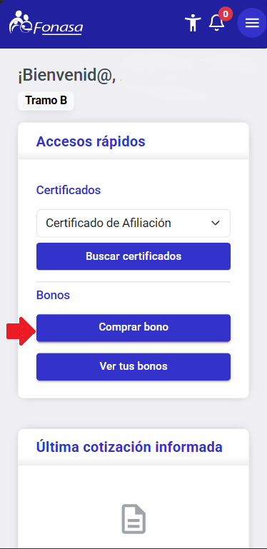
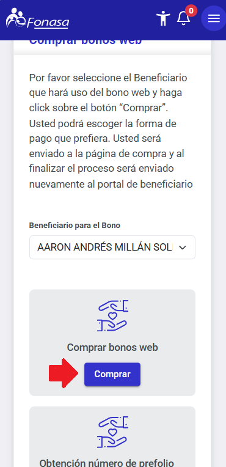
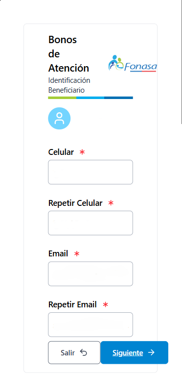
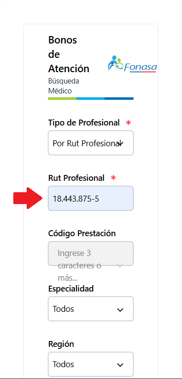
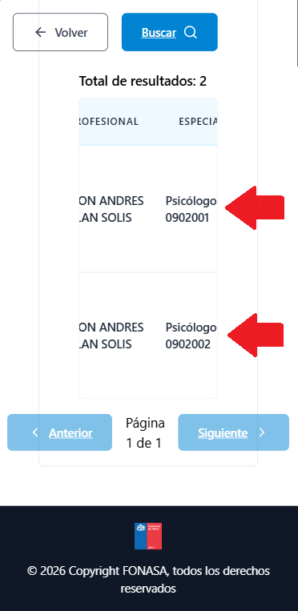
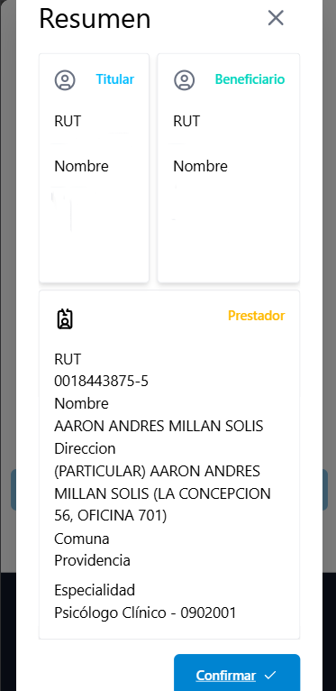

Si ya tienes tu hora o quieres dejar todo listo antes de atenderte, esta guía te muestra la ruta más simple para comprar tu bono FONASA de psicología. La idea es que sepas qué datos necesitas, qué código elegir y qué hacer si prefieres ayuda directa.
Si todavía estás comparando valores, horarios o modalidad de atención, revisa primero nuestra guía de psicólogo por FONASA o la página principal de atención psicológica con FONASA. Esta página funciona mejor cuando ya tienes claro que vas a comprar el bono y necesitas evitar errores en el trámite.
Antes de empezar
Ten a mano estos datos para hacer el trámite sin errores:
- Tu RUT o el del beneficiario.
- ClaveÚnica.
- RUT del terapeuta.
- Saber si corresponde primera consulta o sesión de seguimiento.
Fuente oficial de referencia: ChileAtiende/Fonasa explica que para conocer o comprar un bono necesitas el código o nombre de la prestación y el RUT del prestador. También recuerda que el valor depende del nivel de inscripción del prestador en Modalidad Libre Elección.
Primero confirma que tu atención corresponde a Libre Elección
Los bonos FONASA para prestadores privados se usan bajo la Modalidad Libre Elección. En simple: puedes atenderte con un profesional o centro en convenio, comprar el bono correspondiente y pagar el copago definido para esa prestación.
Antes de pagar, confirma tres cosas: que el terapeuta esté disponible para atenderte, que el RUT del prestador sea el correcto y que el código corresponda a tu tipo de sesión. Si te vas a atender en modalidad presencial en Providencia o en terapia online, el paso administrativo puede ser el mismo, pero la coordinación de horario y terapeuta conviene dejarla clara antes de comprar.
Esta verificación previa es importante porque evita el error más común: comprar un bono correcto para FONASA, pero con datos que no calzan con la atención que finalmente tendrás.
Opción 1: comprar tu bono en Mi FONASA
Si prefieres resolverlo online, este suele ser el camino más directo. Cuando ya tienes el RUT del terapeuta, la compra toma pocos minutos.
-
Ingresa a Mi FONASA. Entra a mi.fonasa.gob.cl con tu RUT y ClaveÚnica.

-
Selecciona la opción de compra de bono. Desde tu panel principal, busca la sección para comprar bono web.

-
Elige al beneficiario. Si tienes cargas inscritas, selecciona quién recibirá la atención.

-
Busca al terapeuta por RUT. Ingresa el RUT del psicólogo o psicóloga que te atenderá.

-
Selecciona la prestación correcta. Aquí debes elegir el código que corresponde a tu atención.
- 0902001: primera consulta psicológica.
- 0902002: sesiones de tratamiento o continuidad.

-
Confirma y paga. Revisa los datos, realiza el pago del copago y guarda el comprobante.

Qué hacer después de comprar el bono
Una vez comprado, guarda el comprobante o código de atención y envíalo por el canal que estés usando para coordinar tu hora. Así el equipo puede verificar que el bono corresponde al terapeuta, a la prestación y al tipo de sesión que agendaste.
- Confirma si tu sesión será presencial u online.
- Guarda el comprobante por si necesitas respaldo posterior.
- Si usas seguro complementario, conserva también los documentos que tu aseguradora pueda pedir.
- Si compraste el bono antes de elegir terapeuta, escríbenos para revisar que los datos calcen antes de asistir.
Si estás empezando un proceso regular de terapia individual, lo ideal es que desde la segunda sesión ya tengas claro si seguirás usando el código de continuidad y cómo repetir el trámite sin volver a buscar toda la información.
Opción 2: comprar tu bono en sucursal presencial
Si prefieres hacerlo de forma presencial, también puedes comprar tu bono en canales autorizados. En ese caso, conviene llevar anotados los datos clave para evitar compras equivocadas.
- RUT del beneficiario.
- RUT del terapeuta.
- Código de la prestación.
- Fecha aproximada de la atención.
Vigencia, devolución y copia del bono
Si compraste un bono y finalmente no lo usaste, no lo des por perdido. Según ChileAtiende, puedes solicitar la devolución del dinero de un bono no utilizado ante FONASA, y para hacerlo normalmente te pedirán la cédula de identidad del titular o carga familiar y el bono de atención de salud.
También puedes solicitar una copia si la necesitas como respaldo para bienestar laboral o seguro complementario. Esta parte no depende de Faro Terapéutico, por lo que conviene revisar siempre la información oficial vigente en ChileAtiende antes de iniciar una solicitud administrativa.
Qué código usar
Esta es una de las dudas más comunes, y vale la pena resolverla antes de pagar.
- 0902001: primera consulta psicológica.
- 0902002: sesiones posteriores, continuidad o tratamiento.
Si no estás seguro, no adivines. Escríbenos y te orientamos antes de comprar.
Errores frecuentes al comprar el bono
No encuentro al terapeuta
Revisa el RUT y confirma que estás buscando al prestador correcto. Si quieres, te lo enviamos nuevamente por WhatsApp para evitar dudas.
No sé si es primera consulta o seguimiento
Eso define el código que debes usar. Si compraste mal, escríbenos de inmediato para revisar el siguiente paso.
El sistema no me deja avanzar
A veces el problema está en la sesión, validación o medio de pago. Si el sistema falla, puedes intentar nuevamente o pedir ayuda al equipo.
¿Quieres la opción más simple?
Si prefieres evitar errores, nuestro equipo puede enviarte el RUT del terapeuta, decirte qué código corresponde a tu caso y ayudarte a completar el proceso paso a paso.
¿Todavía no eliges terapeuta?
Antes de comprar tu bono, puedes revisar primero la guía para pacientes con valores, horarios, modalidades de atención y reembolsos. Así eliges con más tranquilidad y luego haces el trámite con los datos correctos.
Ver guía para pacientes